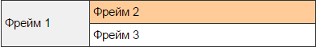

- История HTML
- DocType
- Структура HTML-документа
- Метатеги
- Текст
- Списки
- Отличия тега B от тега Strong
- Рисунки
- Таблицы
- Ссылки
- Map-карта
- Отличия тега div от тега span
- Отличия frame от iframe
- Формы
- Вставка мультипликации
- Обзор HTML5
- Тег канвас
- Универсальные атрибуты*
|
Тег <frameset>
Определяет структуру фреймов на веб-странице. Фреймы разделяют окно браузера на отдельные области, расположенные вплотную друг к другу. В каждую из таких областей загружается самостоятельная веб-страница определяемая с помощью тега <frame>. С помощью фреймов веб-страница делится на два или более документа, которые обычно содержат навигацию по сайту и его контент. Механизм фреймов позволяет открывать документ в одном фрейме, по ссылке, нажатой в совершенно другом фрейме. Тег <frameset> заменяет собой элемент <body> на веб-странице. Допустимо использовать вложенную структуру элементов, это позволяет разбить один фрейм на две и более области.
При использовании фреймов примите во внимание их следующие особенности:
- Поисковые системы плохо работают с фреймовой структурой, поскольку на страницах, которые содержат контент, обычно нет ссылок на другие документы.
- Фреймы скрывают адрес страницы на которой находится посетитель и устанавливаемый через тег <title>, и всегда показывают только адрес сайта. По этой причине понравившуюся страницу невозможно поместить в раздел «Избранное» браузера.
- Пользователь зачастую оказывается на сайте, совершенно не представляя, куда он попал, потому что всего лишь нажал на ссылку, полученную в поисковой системе. Чтобы посетителю сайта было проще разобраться, где он находится, на каждую страницу помещают название сайта, заголовок страницы и навигацию. Фреймы, как правило, нарушают данный принцип, отделяя заголовок сайта от содержания, а навигацию от контента. Представьте, что вы нашли подходящую ссылку в поисковой системе, нажимаете на нее, а в итоге открывается документ без названия и навигации. Чтобы понять, где мы находимся или посмотреть другие материалы, придется редактировать путь в адресной строке, что в любом случае доставляет неудобство.
- Большое число фреймов требует для браузера выделения больше памяти, чем обычно.
Атрибуты:
- border - толщина границы между фреймами.
- bordercolor - цвет линии границы.
- cols - устанавливает ширину или пропорции фреймов в виде колонок.
- frameborder - определяет, отображать рамку вокруг фрейма или нет.
- framespacing - аналог атрибута border, задает ширину границы.
- rows - задает размер или пропорции фреймов в виде строк.
Пример кода:
<frameset rows="*" cols="80,*">
<frame src="frame1.html" name="Фрейм 1">
<frameset rows="80,*">
<frame src="frame2.html" name="Фрейм 2">
<frame src="frame3.html" name="Фрейм 3">
</frameset>
</frameset>
Результат:

Тег <frame>
Тег <frame> определяет свойства отдельного фрейма, на которые делится окно браузера. Этот элемент должен располагаться в контейнере <frameset>, который к тому же задает способ разметки страницы на отдельные области. В каждую из таких областей загружается самостоятельная веб-страница определяемая с помощью атрибута src. Хотя обязательных атрибутов у тега <frame> и нет, рекомендуется задавать каждому фрейму его имя через атрибут name. Это особенно важно, если требуется по ссылке из одного фрейма загружать документ в другой.
Атрибуты:
- bordercolor - цвет линии границы.
- frameborder - определяет, отображать рамку вокруг фрейма или нет.
- name - задает уникальное имя фрейма.
- noresize - определяет, можно изменять размер фрейма пользователю или нет.
- scrolling - способ отображения полосы прокрутки во фрейме.
- src - путь к файлу, предназначенному для загрузки во фрейме.
Синтаксис: <frameset><frame></frameset>
Тег <iframe>
Тег <iframe> создает плавающий фрейм, который находится внутри обычного документа, он позволяет загружать в область заданных размеров любые другие независимые документы.
Тег <iframe> является контейнером, содержание которого игнорируется браузерами, не поддерживающими данный тег. Для таких браузеров можно указать альтернативный текст, который увидят пользователи. Он должен располагаться между элементами <iframe> и </iframe>.
Атрибуты:
- align - Определяет как фрейм будет выравниваться по краю, а также способ обтекания его текстом.
- allowtransparency - Устанавливает прозрачный фон фрейма, через который виден фон страницы.
- frameborder - Устанавливает, отображать границу вокруг фрейма или нет.
- height - Высота фрейма.
- hspace - Горизонтальный отступ от фрейма до окружающего контента.
- marginheight - Отступ сверху и снизу от содержания до границы фрейма.
- marginwidth - Отступ слева и справа от содержания до границы фрейма.
- name - Имя фрейма.
- sandbox - Позволяет задать ряд ограничений на контент загружаемый во фрейме.
- scrolling - Способ отображения полосы прокрутки во фрейме.
- seamless - Определяет, что содержимое фрейма должно отображаться так, словно оно является частью документа.
- src - Путь к файлу, содержимое которого будет загружаться во фрейм.
- srcdoc - Хранит содержимое фрейма непосредственно в атрибуте.
- vspace - Вертикальный отступ от фрейма до окружающего контента.
- width - Ширина фрейма.
- Доступны универсальные атрибуты*
Пример кода:
<iframe src="images/minion.jpg" width="400" height="250" align="left" frameborder="1">
Ваш браузер не поддерживает плавающие фреймы!
</iframe>
Результат:
Отличия
Iframe - это плавающий фрейм, его можно вставлять в любую часть, любой страницы, для того чтобы вывести данные другой страницы.
А просто frame используется когда сама страница состоит из нескольких фреймов, он определяет свойства отдельного фрейма, на которые делится страница. Должен быть расположен в контейнере frameset, который разделяет страницу на отдельные области.
|